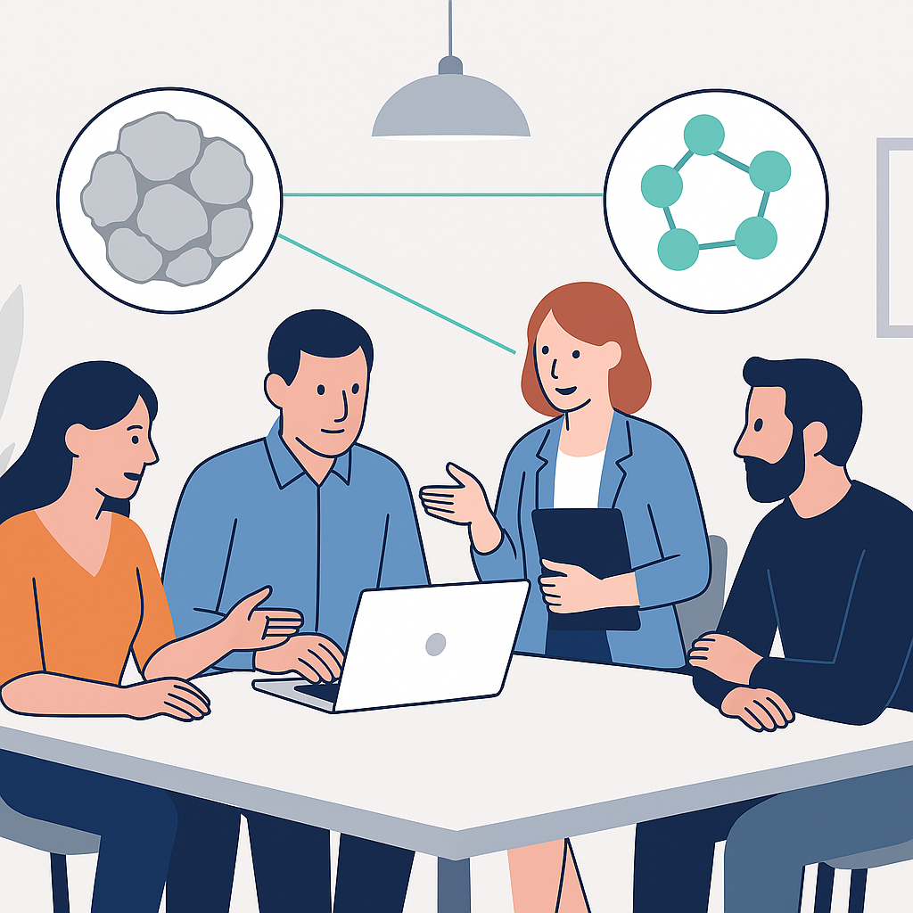

About the SIDEMIX Project
The SIDEMIX project aims to improve the understanding of soil stiffness degradation under cyclic loading, focusing on the influence of particle morphology (shape, size, and roughness) and the proportion of fine-grained fractions in sand mixtures.
The project combines experimental methods—such as triaxial tests, torsional shear, and SEM analysis—with numerical simulations based on the Discrete Element Method (DEM) to study micromechanical soil behavior.
Expected outcomes include improved models for predicting soil response under dynamic loads and the development of more reliable tools for geotechnical design.
Research Team
Vedran Jagodnik
Project Lead
Kamil Bekir Açacan
Collaborator
James Leak
Collaborator
Petra Jagodnik
Collaborator
Davor Marušić
PhD student
